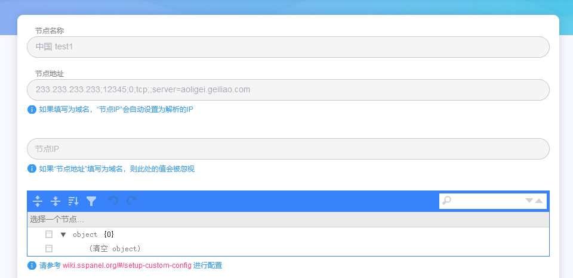

自建机场
Glider 一月 11, 2022自建机场的一些坑（记录）
前言
因为手上的各种vps逐渐增多，因此产生了自建机场、无偿分享的想法。
技术路线打算采用sspanel+后端的组合
前端面板panel的开源地址：https://github.com/Anankke/SSPanel-Uim
后端xrayu的地址：https://github.com/XrayR-project/XrayR
注意：sspanel这帮人把文档墙了，并且脾气也很怪，所以大家遇到什么bug，建议不要去提issue或者在这个项目下查找是否有人遇到过。以下是几个典型冤大头
https://github.com/Anankke/SSPanel-Uim/issues/1056
https://github.com/Anankke/SSPanel-Uim/issues/716
xrayu的讨论氛围则较为正常
技术选择
全部使用docker进行搭建
前端域名使用nginx-proxy结合acme.sh进行反代
xrayu中docker的文档描述非常清晰，这里不多讲
panel则是文档写的稀烂，很多bug和实现得翻源码连蒙带猜整出来，所以这里只是做个记录，大伙选择前端面板时可以用这个代替：https://github.com/Ehco1996/django-sspanel
sspanel搭建
官方团队好像对docker比较抵触，因此教程非常少，个人参考了 https://github.com/du5/SSPanel-Uim-Docker 等第三方代码，这里给个dockercompose
version: '3'
services:
sspanel:
image: sspaneluim/panel
container_name: sspanel
restart: always
ports:
- 28081:80
links:
- mariadb
volumes:
- ./config/.config.php:/var/www/config/.config.php
environment:
- VIRTUAL_HOST=这里填nginx-proxy你的域名
- VIRTUAL_PORT=80
network_mode: bridge
mariadb:
image: mariadb:10.6
container_name: mariadb
restart: always
volumes:
- ./shit/mysql:/var/lib/mysql
- ./shit/glzjin_all.sql:/docker-entrypoint-initdb.d/sspanel.sql
environment:
MYSQL_ROOT_PASSWORD: sspanel
network_mode: bridge
phpmyadmin:
image: phpmyadmin
container_name: phpmyadmin
restart: always
ports:
- 28080:80
environment:
- PMA_ARBITRARY=1
network_mode: bridge
说明：glzjin_all.sql 这个去sspanel的git仓库下载，通过docker挂载到mariadb的启动脚本文件夹中
glzjin_all.sql要自定义一下，打开后在开头加几行：
CREATE DATABASE sspanel CHARACTER SET utf8mb4 COLLATE utf8mb4_unicode_ci;
CREATE USER 'sspanel'@'localhost';
GRANT ALL PRIVILEGES ON sspanel.* TO 'sspanel'@'localhost' IDENTIFIED BY 'sspanel';
FLUSH PRIVILEGES;
USE sspanel;
搭建好之后需要进到容器内初始化管理员账号(账号：666@666.com 密码：admin)
docker exec -it sspanel /bin/bash
php xcat User createAdmin <<EOF
666@666.com
admin
Y
EOF
至此前端搭建完成
xrayu 后端搭建
首先我们在sspanel前端增加一个节点,这里就写最简单的v2ray配置
233.233.233.233是vps的ip，12345是端口

添加后前端会自动分配一个nodeid，假设是1
接下来放一下后端的config.yml
Log:
Level: none # Log level: none, error, warning, info, debug
AccessPath: # /etc/XrayR/access.Log
ErrorPath: # /etc/XrayR/error.log
DnsConfigPath: # /etc/XrayR/dns.json Path to dns config, check https://xtls.github.io/config/base/dns/ for help
RouteConfigPath: # /etc/XrayR/route.json # Path to route config, check https://xtls.github.io/config/base/route/ for help
OutboundConfigPath: # /etc/XrayR/custom_outbound.json # Path to custom outbound config, check https://xtls.github.io/config/base/outbound/ for help
ConnetionConfig:
Handshake: 10 # Handshake time limit, Second 注意！这里需要改大为10
ConnIdle: 300 # Connection idle time limit, Second 同上，原始为10，需要改大为300，不然会出现链接不稳定的情况
UplinkOnly: 2 # Time limit when the connection downstream is closed, Second
DownlinkOnly: 4 # Time limit when the connection is closed after the uplink is closed, Second
BufferSize: 10240 # The internal cache size of each connection, kB 同上，根据需求改大
Nodes:
-
PanelType: "SSpanel" # Panel type: SSpanel, V2board, PMpanel, Proxypanel
ApiConfig:
ApiHost: "这里填你的前端地址"
ApiKey: "这里填你的前端config中muKey"
NodeID: 这里填你的前端分配的nodeid
NodeType: V2ray # Node type: V2ray, Trojan, Shadowsocks, Shadowsocks-Plugin
Timeout: 30 # Timeout for the api request
EnableVless: true # Enable Vless for V2ray Type
EnableXTLS: true # Enable XTLS for V2ray and Trojan
SpeedLimit: 0 # Mbps, Local settings will replace remote settings, 0 means disable
DisableCustomConfig: true
DeviceLimit: 0 # Local settings will replace remote settings, 0 means disable
RuleListPath: # /etc/XrayR/rulelist Path to local rulelist file
ControllerConfig:
ListenIP: 0.0.0.0 # IP address you want to listen
SendIP: 0.0.0.0 # IP address you want to send pacakage
UpdatePeriodic: 60 # Time to update the nodeinfo, how many sec.
EnableDNS: false # Use custom DNS config, Please ensure that you set the dns.json well
DNSType: AsIs # AsIs, UseIP, UseIPv4, UseIPv6, DNS strategy
DisableUploadTraffic: false # Disable Upload Traffic to the panel
DisableGetRule: false # Disable Get Rule from the panel
DisableIVCheck: false # Disable the anti-reply protection for Shadowsocks
DisableSniffing: false # Disable domain sniffing
EnableProxyProtocol: false # Only works for WebSocket and TCP
EnableFallback: false # Only support for Trojan and Vless
FallBackConfigs: # Support multiple fallbacks
-
SNI: # TLS SNI(Server Name Indication), Empty for any
Path: # HTTP PATH, Empty for any
Dest: 80 # Required, Destination of fallback, check https://xtls.github.io/config/fallback/ for details.
ProxyProtocolVer: 0 # Send PROXY protocol version, 0 for dsable
CertConfig:
CertMode: none # Option about how to get certificate: none, file, http, dns. Choose "none" will forcedly disable the tls config.
CertDomain: "你的域名" # Domain to cert
CertFile: /etc/XrayR/cert/你的域名.cert # Provided if the CertMode is file
KeyFile: /etc/XrayR/cert/你的域名.key
Provider: dnspod # DNS cert provider, Get the full support list here: https://go-acme.github.io/lego/dns/
Email: test@me.com
DNSEnv: # DNS ENV option used by DNS provider
DNSPOD_API_KEY: 12312,121235456050542
然后再vps上运行docker即可，假设上述的config文件在root目录下
docker run -d \
--name xrayr \
-v /root/config.yml:/etc/XrayR/config.yml \
--network=host \
crackair/xrayr:latest
docker logs -f xrayr #查看日志
结语
个人认为，无论是什么技术，永远都是老带新，新带萌的过程。
永远不要做资本的傀儡
共勉